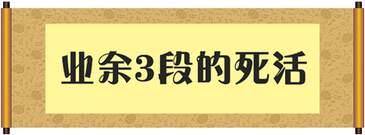

本网站是为棋力在业余7级至2段的网友而建的专业围棋死活网站。
将死活能力提高至业余3段 或更高水平。
一颗“ 二颗“ 三颗“
第一阶段：提供140道死活练习题，包括将近800个变化图。 第二阶段：提供67道死活练习题，包括将近400个变化图。 第三阶段：介绍死活名著《玄玄棋经》，每月更新。 第四阶段：介绍死活名著《官子谱》，每月更新。 第五阶段：介绍死活名著《棋经众妙》，每月更新。 |

本网站是为棋力在业余7级至2段的网友而建的专业围棋死活网站。
将死活能力提高至业余3段 或更高水平。
一颗“ 二颗“ 三颗“
第一阶段：提供140道死活练习题，包括将近800个变化图。 第二阶段：提供67道死活练习题，包括将近400个变化图。 第三阶段：介绍死活名著《玄玄棋经》，每月更新。 第四阶段：介绍死活名著《官子谱》，每月更新。 第五阶段：介绍死活名著《棋经众妙》，每月更新。 |
|
|
最近更新：2015/07/20
 |  |

您是第 位访问者
☆☆ 友情链接 ☆☆
| 【铁勇围棋工作室】 | 【童星少儿围棋网】 | 【梁志围棋教室】 | 【101围棋网】 | 【明日之星围棋网】 |
| 【围棋助手】 | 【镇江围棋网】 | 【天元围棋网】 | 【奇境小站】 | 【浙江少儿围棋网】 |
| 【智能死活助手】 | 【攻守围棋世界】 | 【新加坡围棋协会】 | 【博弈教育网】 | 【网络围棋频道】 |
| 【舟山围棋网】 | 【手机围棋论坛】 | 【纵横网络围棋学校】 | 【新锐围棋】 | 【申请链接】 |
【本站LOGO】 【本站LOGO】
【本站LOGO】
2000 - 2015 weiqi365.free3v.net 版权所有 (C) Since 2000.10.23
斑竹：小南瓜 Email: fiveduan@tom.com